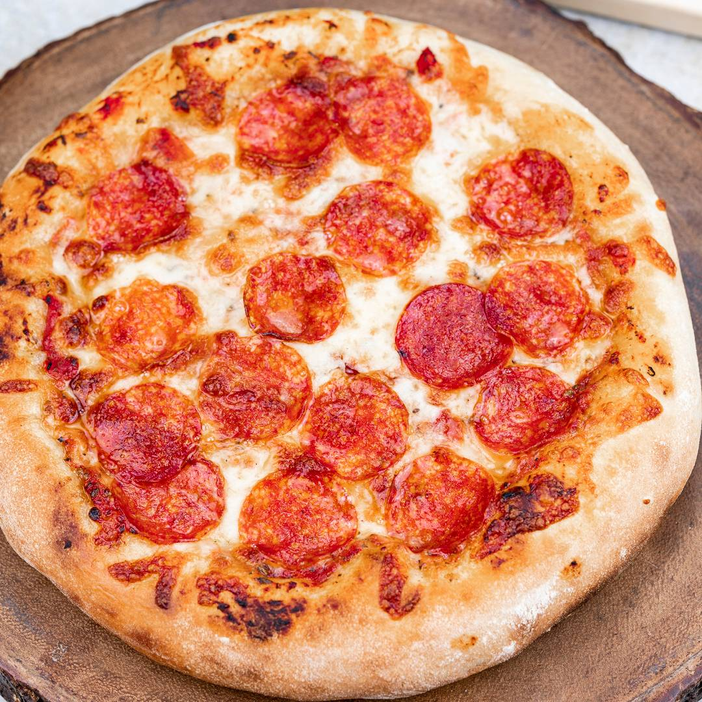

Powrót do strony głównej po więcej przepisów
Prawdziwa włoska pizza

Uwaga prawdziwa włoska pizza, samodzielne przygotowanie
i zjedzenie grozi długoterminowo chęcią wyjazdu do żymu oraz nadużywanie takicg słow
jak carramba oraz mamma mia
Sposób przygotowania
- rozrabiasz ciasto z maki wody oliwy i proszku do pieczenia
- gdy ciasto urosło dodajesz najpierw sos potem inne składnika
- jak ser jest rozpuszczony można wyjmowac z piekarnika
składniki
- mąka, woda, proszek do pieczenia, oliwa na ciasto
- ser, pieczarki,szynka, keczup, bazylia lub inne przyprawy wedle uzannia